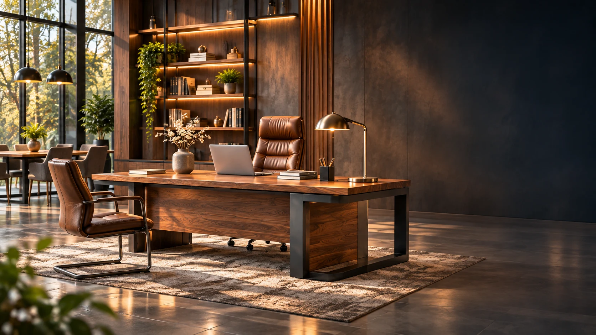

ووتال | طراحی و ساخت محصولات چوب و فلز
طراحی و تولید مبلمان
سفارشی برای فضاهای خاص
در ووتال، ترکیب بافت طبیعی چوب و ساختار فلزی را به محصولی متناسب با فضای شما تبدیل میکنیم؛ از کانتر و میز تا صندلی و اجرای سفارشی.
01 / COLLECTION
دستهبندی
محصولات
چوب و فلز در کنار هم، برای خانه، دفتر و فضاهای تجاری.
پروژههای منتخب ووتال
WOTAL / ABOUT
درباره ووتال
در ووتال، طراحی و ساخت محصولات سفارشی چوب و فلز را با توجه به نیاز فضا و جزئیات اجرایی دنبال میکنیم. نمونههای واقعی ما را در گالری ببینید.
START YOUR PROJECT
برای پروژه خود
با ما در تماس باشید.
نوع محصول، ابعاد و سبک دلخواهتان را معرفی کنید.
ثبت درخواست02 / REAL PORTFOLIO
محصولات و پروژههای واقعی
۶ نمونهکار ارسالی از ووتال؛ هر تصویر به یک صفحه مستقل با توضیح اختصاصی متصل است.
کانتر باس
نمونهکار واقعی / کانتر
کانتر چیتا
نمونهکار واقعی / کانتر
کانتر نچرال
نمونهکار واقعی / کانتر
کانتر دارکنیس
نمونهکار واقعی / کانتر
 WORKSHOP COUNTER
WORKSHOP COUNTERکانتر کارگاهی
نمونهکار واقعی / کانتر
صندلی چوب و فلز
نمونهکار واقعی / صندلی
03 / OUR CRAFT
از ایده تا محصول؛
با احترام به جزئیات ساخت
ساخت محصولات چوب و فلز به هماهنگی طراحی، انتخاب متریال، اجرا و پرداخت نهایی وابسته است. مسیر دقیق هر سفارش پس از بررسی شرایط پروژه مشخص میشود.
INSIDE THE WORKSHOP / REAL WORK04 / MOTION
ویدئوهای کارگاه و نمونهکارها
محل قرارگیری ویدئوهای واقعی؛ فعلاً ویدئویی بارگذاری نشده است.
پشت هر محصول،
یک فرایند ساخت است.
بعد از دریافت ویدئوهای تأییدشده، میتوان برای هر ویدئو کاور، توضیحات و صفحه مستقل قابل جستوجو ساخت.
05 / EDITORIAL JOURNAL
راهنما و محتوای کاربردی
محتوایی برای پاسخ به پرسش مشتری و بهبود قابلیت کشف سایت در موتورهای جستوجو.
06 / CUSTOMER STORIES
اعتماد، با تجربه واقعی ساخته میشود.
جایگاه دیدگاه مشتریان آماده است. نظرات واقعی و با رضایت مشتری منتشر میشوند و هیچ امتیاز یا نقلقول ساختگی در این نسخه وجود ندارد.
پس از دریافت بازخوردها، متن نظرات به پروژه مربوطه متصل میشود تا بازدیدکننده بتواند نمونهکار و تجربه مشتری را کنار هم ببیند.
VERIFIED FEEDBACK ONLY07 / QUESTIONS
سؤالات متداول
پاسخهای اولیه برای شروع فرآیند سفارش.
برای سفارش محصول اختصاصی چه اطلاعاتی لازم است؟
نوع محصول، کاربرد، ابعاد تقریبی، محل نصب و تصویر نمونه یا سبک مورد نظر، شروع خوبی برای بررسی سفارش است.
آیا امکان انتخاب نوع چوب یا فلز وجود دارد؟
انتخابهای دلخواهتان را مطرح کنید. امکان استفاده از متریال و مشخصات نهایی پس از بررسی فنی و موجودی مشخص میشود.
قیمت محصولات چطور محاسبه میشود؟
قیمت به ابعاد، متریال، سطح پرداخت، پیچیدگی ساخت و شرایط اجرا بستگی دارد و برای هر سفارش جداگانه اعلام میشود.
آیا تمام تصاویر سایت نمونهکار واقعی هستند؟
عکسهای موجود در گالری پروژهها واقعیاند. تصویر بزرگ هدر و برخی تصاویر دستهبندی برای نمایش فضای پیشنهادی، بهصورت مفهومی ساخته شدهاند.
08 / GET IN TOUCH
فضای بعدی را با هم تعریف کنیم.
در این پیشنمایش میتوانید درخواست خود را تنظیم و متن آن را کپی کنید. اطلاعات تا زمان اتصال رسمی به سرور ارسال یا ذخیره نمیشود.